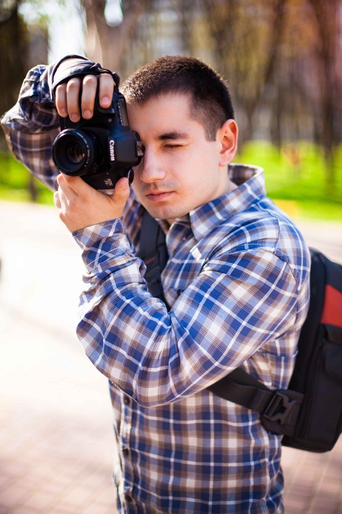

Акция! Забронируйте дату свадьбы в течении 5 дней и получите фото книгу в подарок!

" Фотограф Киев "
Меня зовут Роман Аркан, я профессиональный свадебный и студийный фотограф, живу и работаю преимущественно в Киеве.
О ФОТОСЪЁМКЕ, МОЯ СПЕЦИФИКА КАК ФОТОГРАФА:
- Обрабатываю ВСЕ фотографии со съемки, то есть Вы получаете на руки ВЕСЬ материал в обработанном виде. Для свадебных фотосессий с полного дня это около 1000 обработанных и отобранных фотографий.
- Ценю ваше время и понимаю, что момент неповторим. Поэтому забочусь о том, чтобы исключить любой форс-мажор: использую две камеры на съёмке и резервирование данных на всех этапах.
- Срок обработки свадебных фотосессий - около 2-х недель, возможна срочная обработка фотографий в несколько рук от 1-го дня.
- По умолчанию я как автор фотографий оставляю за собой право использовать работы для собственной рекламы, в том числе в публикациях. Однако, если вы настаиваете на конфиденциальности - вам достаточно просто предупредить меня об этом. Это не повлияет на цену фотосъёмки.
До встречи с вами на фотосессии, я буду рад сделать для вас самые яркие фотоснимки!
© 2017SugarSync , Inc. All Rights Reserved.
Project developer - Ann Kostenko.
E-mail: asus-intel@yandex.ru